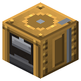

Паровой молот


Слиток + 100 mB пара → пластина.
Слиток + 100 mB пара → пластина. 9 пластин + 400 mB пара → плотная пластина (пакетная ковка: медь, олово, бронза, золото, железо, сталь, свинец). Или рядом со шкивом — от вала, без пара.
Параметры
| Эпоха | 2 — Пар и механика |
|---|---|
| Многоблок | нет |
| Привод | вал 3 л.с., пар |
| Баки, mB | 8000 |
| что делает | слиток -> лист; плотные листы IC2 |
| энергия на входе | пар 100 mB или вал 3 |
| из чего | бронзовые листы, поршень, втулки RC, блок стали, наковальня |
Числа
| паровой молот от вала | 3 л.с. |
|---|---|
| паровой молот: пар на удар | 100 mB |
| паровой молот: удар | 40 тик |
Кто кормит
- steam ← Парогенератор АЭС
- вал ← Паровая машина, Паровая машина высокого давления (трансмиссия)
Кого кормит
- машины Zavod её продукт не едят
Как устроено (из кода)
Паровой молот (Несмит, 1839): слиток -> пластина без износа ручного молота. Партия: 1 слиток + 100 mB пара, 2 с. Или от вала через шкив (Transmission.hammerHp л.с.) - тогда пар не нужен. Работает с любым металлом, у которого в словаре руд есть и ingotX, и plateX. Слоты: 0 слитки, 1 пластины (выход). Бак: 0 пар. Пакетная ковка (1.44): DENSE пластин одного металла сваривают ударами в плотную пластину IC2 (медь, олово, бронза, золото, железо, сталь, свинец) - DENSE_TIME тиков, DENSE_STEAM пара. Без электрического компрессора.